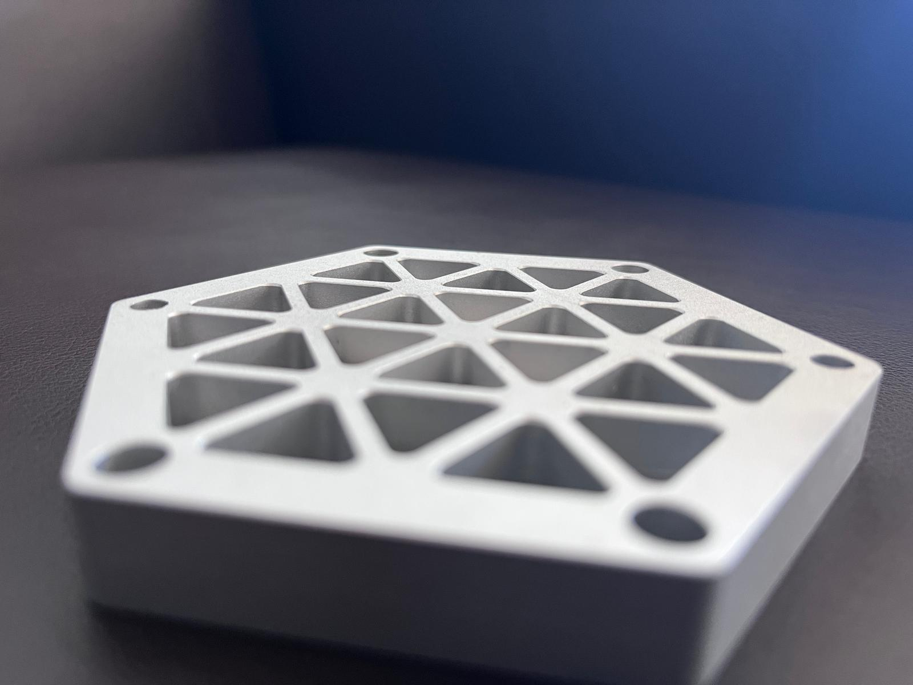
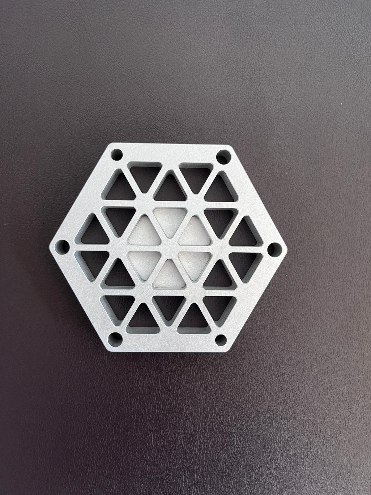

Geometry & materials
Milling can produce complex features across a broad range of materials and tooling configurations.
[ MECH 200A / Fall 2024 / Process → Part ]
Manufacturing coursework / shop practice / process planning
I built my original manufacturing portfolio for MECH 200A at Colorado State. The course connected machining theory to the decisions that make a process usable on the shop floor: workholding, tooling, speeds and feeds, safety, inspection, and documentation.
This page brings that work into my current engineering portfolio. I kept the original class site available as a separate reference rather than replacing it.
View original Wix manufacturing portfolio
Process fundamentals
In my MECH 200 process summary, I described milling as a process where the workpiece is fixed while a rotating cutting tool removes material. The same basic relationship scales from manual vertical and horizontal mills to CNC and multi-axis machines, but the setup still controls what geometry is practical.
I came away thinking about milling less as a machine and more as a chain of constraints: cutter access, tool reach, workholding, material, spindle speed, feed rate, and how many setups are required to reach the finished geometry.
Milling can produce complex features across a broad range of materials and tooling configurations.
Tool paths, cutter reach, fixtures, and part orientation can limit a design before the first cut is made.
The part and vise have to be secure, repeatable, and positioned so the required surfaces remain accessible.
Spindle speed and feed rate have to match the material and cutter instead of being treated as generic machine settings.
Job traveler exercise
For the MECH 200A midterm, I worked through a simulated manufacturing-engineer scenario for a custom gear. The assignment called for a 20-part prototype run in 1215 carbon steel and emphasized manual machining because the volume did not justify the programming, fixturing, and setup overhead of a dedicated CNC production process.
The deliverable was a production traveler rather than a design report. My package combined the information a machinist and inspector would need to execute the job and document quality: process instructions, safety, materials and tooling, metrology, and the supporting safety data.
Machine operation
I completed the Haas CNC Basic Mill Operator certification in December 2024. The training covered machine-tool fundamentals, mill safety, startup, control operation, and the workflow required before a program is trusted to cut material.
That training gave me a better bridge between CAD geometry and the reality of manufacturing it. A model can be dimensionally correct and still be inconvenient to fixture, inspect, or machine efficiently.
Machined parts

Design for manufacturing
I now try to ask manufacturing questions while I am still designing: How will this be held? Which tool reaches that feature? What tolerance is actually needed? How will someone inspect it? What does a failed setup look like, and can the design avoid it?
That mindset carries into my later work in rocketry, composites, test hardware, and CAD. The part is not finished when the model is finished. It is finished when the real hardware can be produced, checked, assembled, and used.